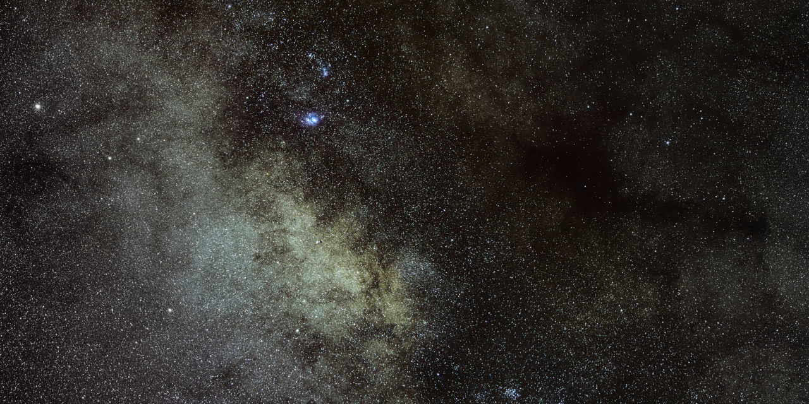

-
DSO Guide
Web application for amateur astronomical observations planning
Aplicación web para planificar observaciones astronómicas
-

Astrophotography
Some images I took of the night sky
Algunas imágenes que capturé del cielo nocturno
-
parallax-portal
Augmented reality demonstration, based on webcam face detection
Demo de realidad aumentada, basada en la detección de caras desde una webcam
-
Stellarium GUI icons
Redrawn every icon on the Stellarium user interface
Redibujado de los íconos en la interfaz de Stellarium
-
rtlsdr_sstv
Slow Scan TV (PD-120) modulation and demodulation
Modulación y demodulación de transmisiones SSTV (PD-120)
-
DIY handheld console
Raspberry Pi Handheld console for retro games emulation
Consola portátil con Raspberry PI para emulación de juegos